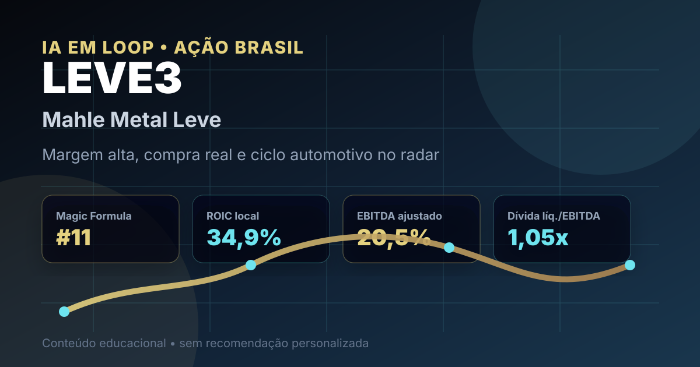

04/09: LEVE3, Mahle e o preço da margem automotiva
LEVE3 entrou no aporte real de agosto da carteira Magic Formula B3 e aparece no top 15 do ranking local. A pergunta central é simples: a rentabilidade forte de autopeças compensa a exposição ao ciclo automotivo, câmbio e reposição mais fraca?

Autopeças podem combinar margem e tecnologia, mas o acionista precisa monitorar demanda, exportações, reposição e disciplina de capital.
Resposta curta: qualidade operacional existe, mas o ciclo cobra desconto
Na base local do IA em Loop de agosto de 2026, LEVE3 aparece em 11º lugar no ranking Magic Formula B3, com ROIC de 34,85% e earnings yield de 15,77%. No aporte real de agosto, a carteira Magic Formula B3 comprou 4 ações a preço médio de R$ 32,50, total bruto de R$ 130,00.
A leitura prática é: LEVE3 tem mérito quantitativo por retorno sobre capital e geração de lucro, mas não deve ser tratada como defensiva pura. A empresa vende para montadoras, reposição e exportação; portanto, margem alta só vira tese sustentável se a demanda automotiva, o mix de produtos e o câmbio não corroerem o resultado.
O que os dados verificados mostram
No release do 2T26, a Mahle Metal Leve reportou receita operacional líquida de R$ 1,332 bilhão no trimestre, queda de 2,7% frente ao 2T25. No primeiro semestre, a receita líquida foi de R$ 2,589 bilhões, queda de 1,8% frente ao 1S25.
Mesmo com receita levemente menor, a rentabilidade melhorou. O lucro bruto do 2T26 foi de R$ 385,2 milhões, margem bruta de 28,9%, acima dos 27,2% do 2T25. O EBITDA ajustado ficou em R$ 273,8 milhões, margem de 20,5%; o lucro líquido foi de R$ 159,6 milhões, margem líquida de 12,0%.
O balanço também ajuda na leitura de risco: ao fim do 1S26, a companhia reportou financiamentos de R$ 1,557 bilhão, caixa e equivalentes de R$ 499,7 milhões e dívida líquida/EBITDA ajustado de 1,05 vez. Não é caixa líquido, mas a alavancagem é bem menor que em muitas empresas industriais cíclicas.
| Métrica verificada | Fonte/período | Valor | Leitura |
|---|---|---|---|
| Posição no ranking | Magic Formula B3 IA em Loop | #11 | boa combinação de retorno e preço |
| Aporte recente | Nota de corretagem de agosto | 4 ações a R$ 32,50 | posição real em carteira |
| Receita líquida | Release 2T26 | R$ 1,332 bi | queda moderada no trimestre |
| EBITDA ajustado | Release 2T26 | R$ 273,8 mi | margem de 20,5% |
| Dívida líquida/EBITDA | Release 1S26 | 1,05x | alavancagem controlada |
Por que Mahle importa agora
Mahle importa porque combina três características que a Magic Formula costuma favorecer: retorno sobre capital alto, lucro relevante em relação ao preço e negócio industrial com barreiras técnicas. A companhia fornece componentes para motores, sistemas térmicos e soluções de mobilidade, com presença em equipamento original e reposição.
O lado positivo é que a empresa demonstrou disciplina operacional: custos caíram mais que a receita no 2T26, margens subiram e a dívida líquida permaneceu administrável. O lado que exige cuidado é a origem da receita: Aftermarket caiu 9,4% no trimestre e 6,2% no semestre, enquanto exportações de equipamento original também recuaram. Margem boa em indústria cíclica precisa ser testada quando volume, câmbio e competição apertam ao mesmo tempo.
LEVE3 parece uma tese de qualidade industrial comprada com disciplina quantitativa: ROIC alto, geração de lucro e dívida moderada. O teste é a resiliência. Se a empresa mantiver margem acima de 20% no EBITDA ajustado, defender participação de mercado e atravessar a fraqueza de reposição/exportação, o desconto pode ser interessante. Se a receita continuar caindo e a concorrência comprimir preços, a margem atual pode representar pico de ciclo.
O que favorece e o que ameaça a tese
Favoráveis
• Presença em 11º lugar no ranking Magic Formula B3.
• Compra real recente, conectando ranking e carteira publicada.
• ROIC local de 34,85%, sinal de bom uso do capital.
• Margem EBITDA ajustada de 20,5% no 2T26.
• Dívida líquida/EBITDA ajustado de 1,05 vez no 1S26.
Desfavoráveis
• Receita líquida caiu 2,7% no 2T26 e 1,8% no 1S26.
• Aftermarket recuou 9,4% no trimestre e 6,2% no semestre.
• Exportações sofrem com câmbio e demanda externa.
• Autopeças dependem do ciclo de produção, venda e manutenção de veículos.
• Concorrência de importados pode limitar preço e volume.
Checklist para acompanhar daqui em diante
- Margem: confirmar se EBITDA ajustado acima de 20% é recorrente ou efeito temporário de mix e custos.
- Receita: observar se equipamento original doméstico compensa reposição e exportação mais fracas.
- Câmbio: medir impacto da conversão de exportações e da operação argentina.
- Dívida: acompanhar vencimentos, custo médio e manutenção da alavancagem perto de 1 vez EBITDA.
- Capital: verificar se investimentos em tecnologia e mobilidade preservam retorno sobre capital.
Conclusão
A resposta para a pergunta do post é: LEVE3 tem qualidade operacional suficiente para justificar acompanhamento, mas a margem de segurança depende de o ciclo automotivo não derrubar receita e margens ao mesmo tempo. O ranking aponta retorno alto; a compra real mostra exposição em carteira; o release confirma rentabilidade forte, mas também revela queda em segmentos importantes.
Na régua do IA em Loop, Mahle Metal Leve deve ser acompanhada como indústria de boa rentabilidade, não como renda previsível. A tese melhora com recuperação do Aftermarket, estabilidade nas exportações e manutenção de dívida baixa. Piora se a margem de 2026 se mostrar temporária diante de concorrência, câmbio e desaceleração de demanda.